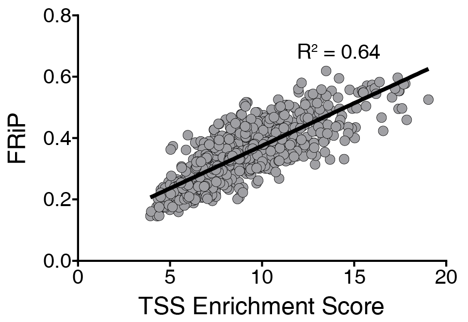
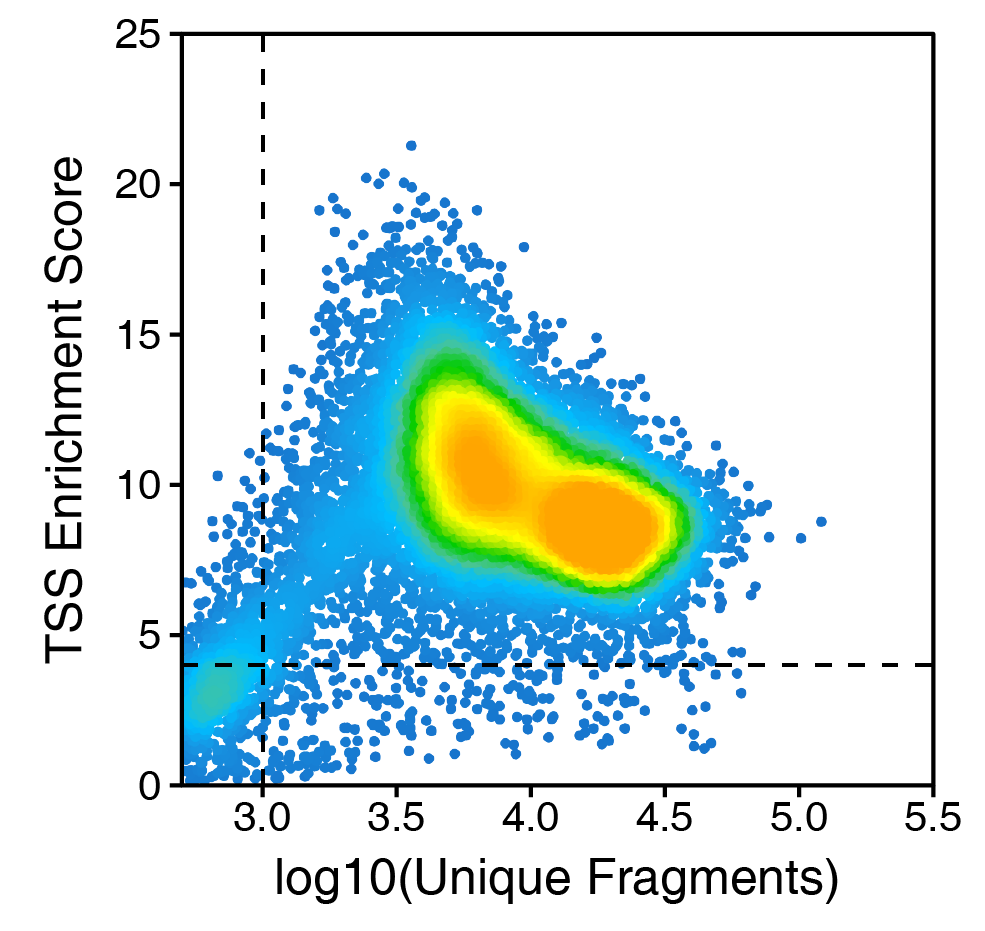

qcFilters.RmdTypically, when we refer to data quality in ATAC-seq, we are referring to the signal-to-background ratio. Because promoter regions are largely accessible across cell types, this is often measured as an enrichment of signal at transcription start sites (TSSs) compared to the surrounding region. Another common quality control metric is the fraction of reads in peaks (FRiP). In our hands, these two metrics perform very similarly but the TSS enrichment score has one key advantage - it does not require you to call peaks.

To really drive this point home, to calculate FRiP you either must create a new peak set from your sample of interest or input a pre-defined peak set. Neither of these is a good solution because creating a new peak set for each sample leads to variation across samples and inputing a pre-defined peak set may not adequately capture the signal in your sample of interest. Thus, we use the TSS enrichment score.
However, the TSS enrichment score is not without its own caveats. In particular, the set of TSS regions that you use will change the numeric value of the score. As genome annotations change or if you generate ATAC-seq data from different organisms, the actual numeric value may not be consistent across these conditions. To standardize this, we use the TSS regions derived from QQQ.
In scATAC-seq, we additionally use the number of unique fragments per cell as a second quality control filter. If a single cell does not have at least QQQ unique fragments, it becomes difficult to make reliable conclusions about that single cell, even if it has a high TSS enrichment score.

In ArchR, quality control filtering is performed during ArrowFile creation using the createArrowFiles() function with parameters filterTSS, filterFrags, and removeFilteredCells.